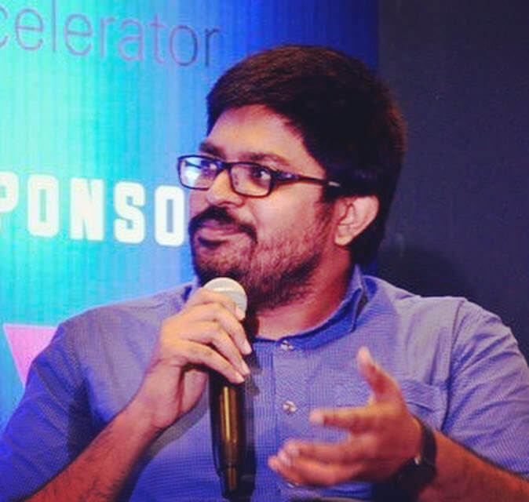

About
Executive with extensive experience in management and technology architecture in the IT industry. As a Principal Architect and Sr Software Dev Ops Manager at IBM, I lead the design and onboarding of complex cloud and AI workloads for IBM's Platinum-level clients in finance and healthcare.
With 19+ years in software development, enterprise architecture, management, and cloud infrastructure, I bring expertise across AI, Cloud, Security, and Quantum. I lead globally distributed engineering teams for IBM Cloud's MISP portfolio and AIOps capabilities, bridging day-to-day operational management with enterprise-level technical strategy.
Recognised as a BCS Fellow, IBM Level 3 Thought Leader, Distinguished Architect (OpenGroup certified), and Microsoft MVP Alumni — the first from India for Games. Member of the Association of Enterprise Architects.
Active across the developer ecosystem — 3K+ LinkedIn followers, 2,885 Stack Overflow reputation (149K reached), and 200+ publications reaching 1M+ developers. Passion Vista named me one of The Most Admired Global Indians (2024).